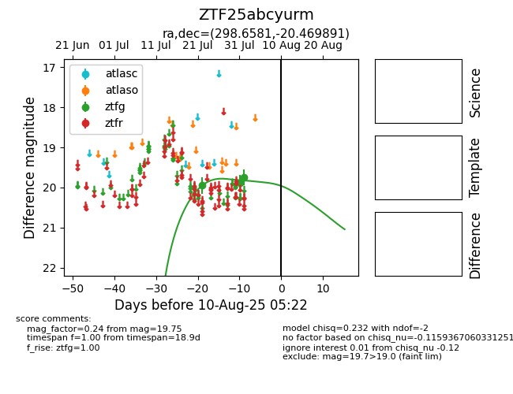

Target ZTF25abcyurm at 2025-08-10 05:22, see:
FINK: fink-portal.org/ZTF25abcyurm
Lasair: lasair-ztf.lsst.ac.uk/objects/ZTF25abcyurm
ALeRCE: alerce.online/object/ZTF25abcyurm
alt names
ZTF25abcyurm (ztf,fink)
coordinates:
equatorial (ra, dec) = (298.6581,-20.46989)
galactic (l, b) = (20.7299,-22.73499)
photometry
last ztfg=19.75
3 ztfg detections
